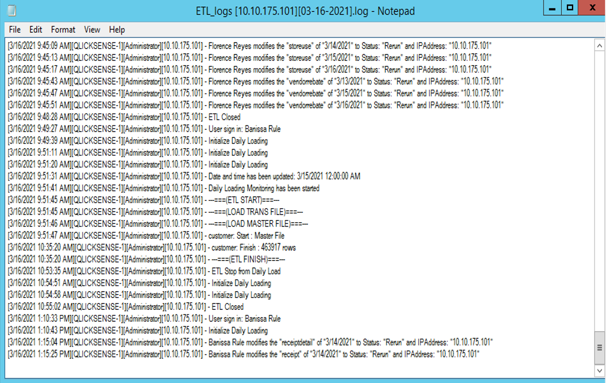
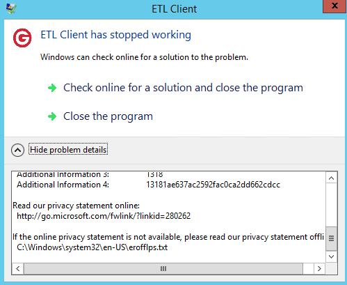

Records of Encountered Issues
Restart Server
Application : QLIKSENSE
Date Reported : 1/29/2021
Date Issue : 1/26/2021
Date Finish : 2/1/2021
Issue :
Restart server Dated Jan 27, 2021
Stop processing Jan 27, 2021
Stop NODE - RIM
ETL has Stopped Working
Application : ETL
Date Reported : 1/30/2021
Date Issue : 1/30/2021
Date Finish : 1/31/2021
Application : ETL
Date Reported : 3/15/2021
We checked the ETL logs for March 14 (Sunday) and found out that it did not manage to finish.
We also checked ETL logs for March 15 (Monday).
I closed it since ETL stopped working,
XAMPPrestarted.In the morning, no error has occurred yet on RIM and Central. Then we found the error on the afternoon. Hence, I and sir Kim made a call. But QLIK is still running.
Qlik success has been completed.
Application : ETL
Date Reported : 3/29/2021
Date Issue : 3/29/2021
Date Finish : 3/29/2021
Issue : ETL HAS STOPPED WORKING
I wasn't able to screenshot the XAMPP, but upon checking the notepad log, I found out that last March 28, ETL has stopped working. No problem was found in the QLIKSENSE app but when the ETL server restarted, QLIKSENSE failed. QLIKSENSE failed because instead of letting QLIK have everything to be processed before restarting the ETL, we did the reverse which is restarting ETL while QLIK is still processing.Application : ETL
Date Reported : 2/14/2022
Date Issue : 2/14/2022
Date Finish : 2/14/2022
Issue : ETL HAS STOPPED WORKING
I have encountered an ETL issue this morning (Monday February 14, 2022 - 7:55am) . Upon accessing 10.10.175.101, I saw a prompt saying "ETL has stopped working", so I just closed the app and opened it again. And as I checked the ETL logs, I found that ETL did not finish at 2am as it usually does. Attached here are the screenshots of this particular concern.
Reset Status
Application : QLIKSENSE
Date Reported : 1/30/2021
Date Issue : 1/30/2021
Date Finish : 1/31/2021
Application : QLIK
Date Reported : 3/16/2021
Date Issue : 3/16/2021
Date Finish : 3/16/2021
Application : QLIK
Date Reported : 3/17/2021
Date Issue : 3/17/2021
Reset 2am, QLIK server restarted at 6:25am
Application : QLIK
Date Reported : 3/22/2021
Date Issue : 3/22/2021
Date Finish : 3/22/2021
QLIKSENSE : RESET @7am
We have a concern pertaining to QLIKSENSE. The last date process was March 19, 2021. Then I checked the ETL logs for March 19 to 22 and I did not find any error as it all showedETL FINISH. See screenshot below: Started @ 11:28am Started @ 12:30am
Receipt Details & Receipt Errors
Application : ETL
Date Reported : 2/5/2021
Date Issue : Jan 23 to Jan 30, 2021
Date Finish : 2/17/2021
Receipt details & receipt errors during processing in ETL
Unable to Set ETL
Application : ETL
Date Reported : 3/17/2021
Date Issue : 3/16/2021
Date Finish :
CONFIGURE SYSTEM services stopped
Application : QLIKSENSE
Date Reported : 8/16/2021
Date Issue : 8/15/2021
Date Finish : Application : ETL
Date Reported : 8/31/2021
Date Issue : 8/31/2021
Application : QLIKSENSE
Date Reported : 3/31/2022
Date Issue : 3/31/2022
Date Finish : 4/01/2022 This is the first indicator of error that I saw yesterday (March 31, 2022) Upon opening each of the services underCONFIGURE SYSTEM, I saw that the status on RIM is stopped. TheNodedoesn't show any sign of error, but as I checked it, it shows the services that are not running on theRIM Node. I tried to check on both servers (QLIK and ETL) whether the services are running or not, and the status says it's all running.
I am not sure if the following errors are relevant to the issue, but I'd like to show these as part of my observation while monitoring.
PostgreSQLin QLIK server Occured twice in the morning while I was remoting the ETL server Prompts when I open the ETL app in the morning (the app and logs shows ETL FINISH though)
No Vendor Filter
Application : QLIKSENSE
Date Reported : 1/17/2022
Date Issue : 1/17/2022
Date Finish : 1/19/2022
Application : QLIKSENSE
Date Reported : 3/14/2022
Date Issue : 3/13/2022
Date Finish : 3/15/2022
On 14th of March 2022, we noticed that the vendor filter doesn't show any data at all. And upon investigating the ETL error logs, we found out that there is an error upon running the vendor master file.
QLIKSENSE user can't access
Application : QLIKSENSE
Date Reported : 1/25/2022
Date Issue : 1/25/2022
Date Finish : 1/25/2022
Node is offline
Application : QLIKSENSE
Date Reported : 2/25/2022
Date Issue : 2/25/2022
Date Finish : 3/1/2022
On 26th of February 2022, the qlik sense repository logs located atdrive C:\ProgramData\Qlik\Sense\Log\Repositorywas checked and have it coordinated with the server admin. On 1st of March 2022, further analysis has been made to trace the possible cause of the issue. On the server, system repository logs was checked located atdrive C:\ProgramData\Qlik\Sense\Log\Repositoryand it shows that there is a failure to connect to the server.Upon running the
Afterwards, the server admin checked the IP configuration of the servers. Upon checking, he found that the gateway of the ETL server doesn't match with the qlik server's gateway. Hence, he changed the ETL server's gateway into 10.10.0.224 to match with the gateway of qlik.netstat commandon the ETL server, the result shows that port 4444 is not ESTABLISHED.
ETL Client has stopped working
Application : ETL
Date Reported : 3/17/2022
Date Issue : 3/17/2022
Date Finish : 3/17/2022
I would like to report the issue that I encountered this morning which I noticed at 8:00am (March 17, 2022). As I opened the ETL server, I saw a prompt on the ETL app saying "ETL Client has stopped working". However, I wasn't able to screenshot that particular prompt as I immediately closed it. After closing it, the ETL app closed as well. With that in mind, I checked the ETL logs and I found out that the ETL processing did not finish and stopped processing at exactly 12:09 AM. I have attached here the screenshot of the ETL logs. Please see attached file. Thank you!Application : ETL
Date Reported : 4/18/2022
Date Issue : 4/16/2022
Date Finish : 4/20/2022
At 8AM today, while remoting the ETL Server, I noticed this prompt below on the ETL app. So I just closed it and opened again to run the customer. Afterwards, I opened the logs and saw that the processing stopped at receipt on April 16, 2022 (12AM). During my rerun in the afternoon of April 18, 2022, the running stopped at receipt. Then, we noticed that it keeps on running the220415date in which the store at that time was closed. I also checked the error details. Details in the screenshots below:


ETL app did not process at 12AM
Application : ETL
Date Reported : 3/18/2022
Date Issue : 3/18/2022
Date Finish : 3/18/2022
Upon opening the ETL logs at morning, I was expecting to see the current date's logs but couldn't see any. We then found out that it was just due to closing of the ETL app yesterday. Although it was fine to close it for as long as weSTARTthe Daily Loading for tomorrow's date.
ETL SHU Slow Data Extraction
Application : ETL
Date Reported : 1/11/2019
Date Issue : 1/11/2019
Date Finish : 1/11/2019
Job : On hand Inventory
ACTION TAKEN:
*Replaced the current driver from OLEDB driver to DBS UDB iSeries Driver.Net Provider to improve performance
*Removed the Group by function in the SQL query
STATUS:
*Problem is fixed
*Still under observation for errors and bugs